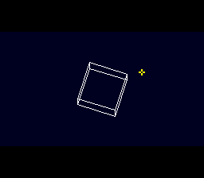

|
OpenSNES
Modern Open-Source SNES Development SDK
|
|
OpenSNES
Modern Open-Source SNES Development SDK
|
The shape of a Super FX game: the game runs every frame, the GSU renders on its own clock, the NMI puts finished frames on screen.

A crosshair follows the D-pad at 60 frames per second, and SNESMOD music plays, while the GSU draws superfx_3d's rotating cube at 30. Neither waits for the other: the renderer runs from the GSU's code cache, so the CPU keeps the ROM and its game loop; gsuPresent() double-buffers the frames, and the NMI moves each one to VRAM a piece per VBlank, showing it only once all of it has landed.
Then open superfx_game_skeleton.sfc in luna (or bsnes). Hold the D-pad.
| File | Purpose |
|---|---|
| main.c | Game loop, crosshair, rotation and projection, job pacing |
| gsu_cube.sfx | Bresenham + PLOT renderer that runs from the code cache |
| gsu_loader.asm | .incbin of the renderer, edge upload to Game Pak RAM |
tools/luna-test/manifests/superfx_game_skeleton.toml holds RIGHT for 60 frames and checks the crosshair moved 60 pixels (the game never skipped a frame), about 30 presented frames per second and no bus violation. tools/luna-test/vram_dma_blank.py checks every framebuffer byte lands in blank, as whole frames into alternating blocks, with every swap after a whole frame.
| Module | Purpose |
|---|---|
| console | System initialization, WaitForVBlank |
| sprite | The crosshair (OAM) |
| dma | Palettes and the crosshair tile |
| background | BG1 mode, map, scroll, char base |
| input | The D-pad |
| superfx | Cache jobs, presentation, letterbox, bitmap tilemap (added by USE_SUPERFX) |
| snesmod | The music (audio/snesmod_music's module; added by USE_SNESMOD) |